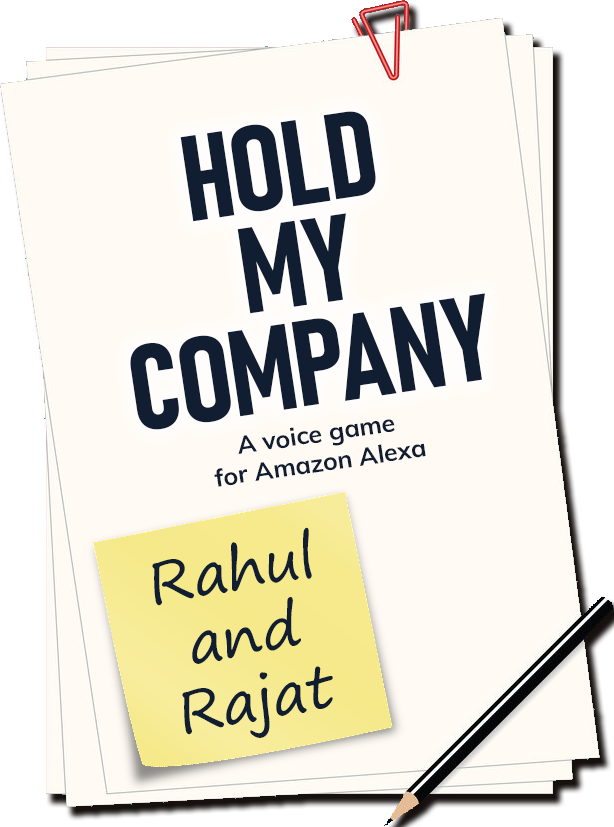
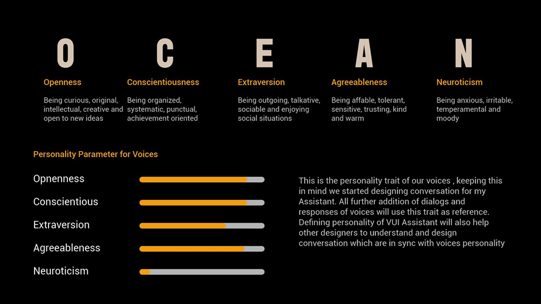

Overview
Hold my company is a voice based strategy game powered by Alexa where player takes up the role of a CTO in an IT firm. The player needs to strategize well to lead the company to profits.
They need to make decisions and accordingly develop their personality into a unique character in game.
The Approach
Interaction
Voice User Interfaces (VUI,) although are not new, haven't seen significant growth in the past in interactivity. Only in the last few years, through home assistant devices like Google Home and Amazon Echo, the boundaries have increased many folds and allowed developers to create highly interactive voice based games.
Amazon Alexa
We chose Alexa Skill Kit (ASK) for various advantages tied to it:
- Cloud based invocation
- Huge collection of APIs
- Efficient Automatic Speech Recognition (ASR) and Natural Language Understanding (NLU)
- Multimodal input (Phone, Echo Buttons, Echo Show,etc..)
- Native and Custom Voice Interfaces
- In-skill purchasing
- Flexible back end support
Story
The game begins with an interview for the role of a CTO. Once you get the job, you will be introduced to the team and the hardwork begins.
Every day after that is a new challenge where you need to manage resources, expenditure and time accordingly, to lead your company to success!
But be careful - there are competitors to keep up with, traitors in your team spying your data, a very unstable market to work with and there's no coffee machine!
VUI - Using Voice Input
VUI in Alexa offers a wide range of mechanics. Through the in-built Natural Language Processing, users can engage with the game in a flexible and organic manner. For instance, they may say "What's my team size?" or "How many members are on my team?" and the output will be the same.
Along with this, we could also develop different NPC voices in the game using Alexa's in-built voices.
Mechanics
Alexa's interaction is inherently is a dialogue; every user input has to be processed and sent to your skill loaded in from the cloud, which then responds. Broadly, there are four different ways an interaction can happen
- Simple “Yes” or “No”
- Repetitive Reprompt
- Fixed list of instructions
- Free-Form, Contextualized Input
Gameplay
There are three major aspects to Hold My Company. The Team, Bank Balance and Projects
Along with this, there are several situations in the game where the player needs to make a choice. These choices affect their in-game character and consequently affect the future gameplay. Refer to image below